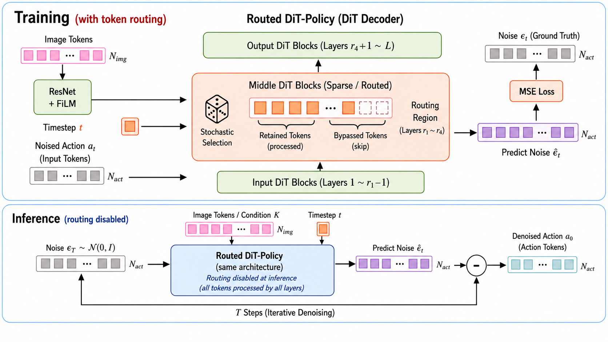
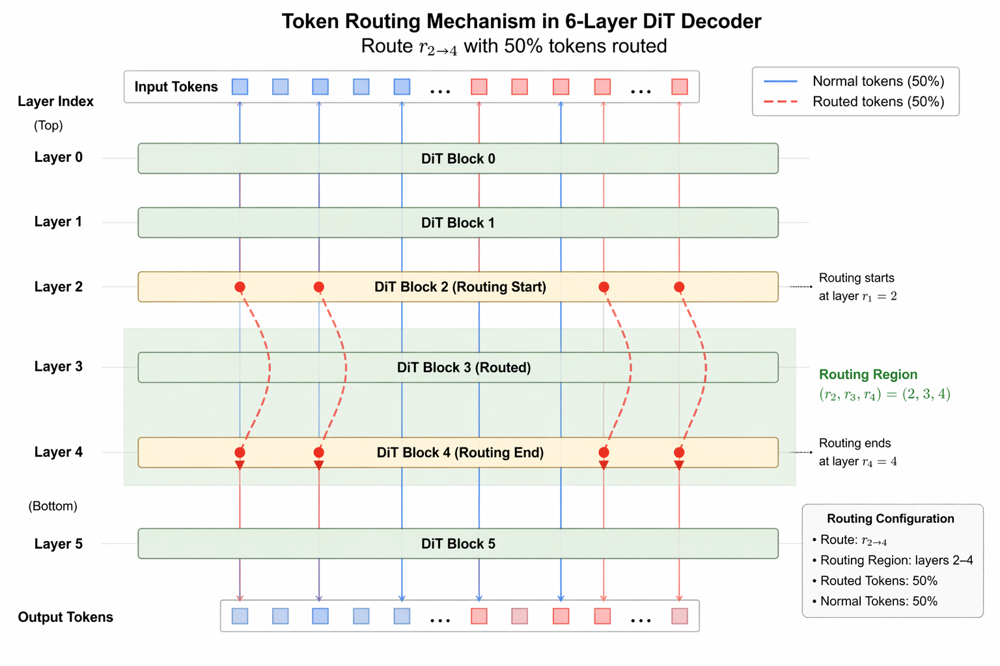
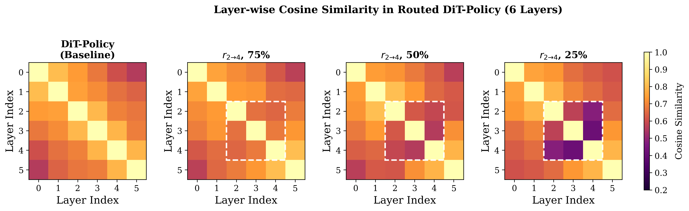
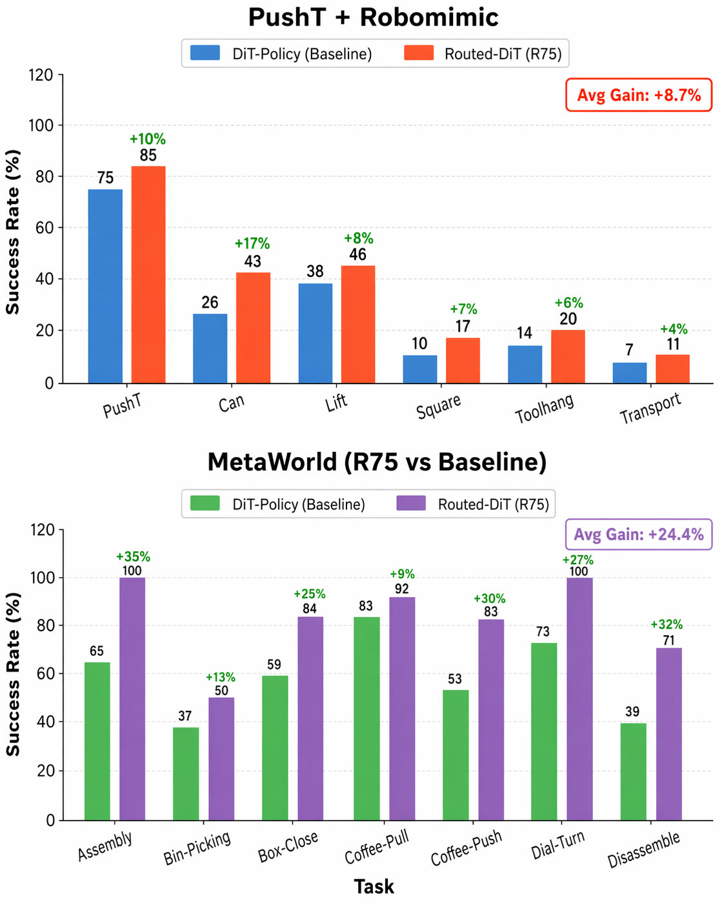
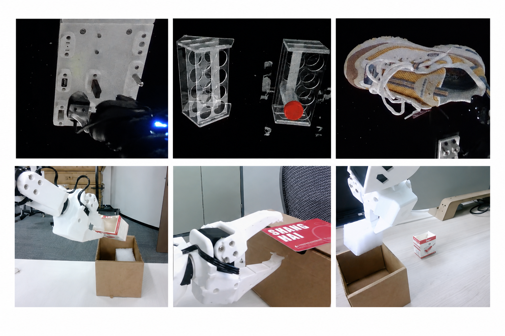
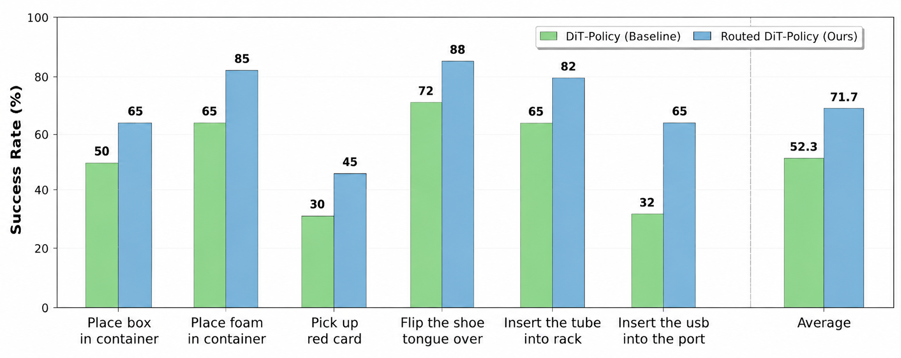

Under double-blind review at IEEE Robotics and Automation Letters (RA-L)
Closed-loop rollouts of Routed DiT-Policy on real hardware.
Pick up the red card
Place foam into container
Place red box into container
Flip the shoe tongue over
Insert the tube into rack
Insert the USB into the port (+33 pts)

Routed DiT-Policy. During training only, a random subset of action tokens is routed through the middle DiT decoder blocks while the rest bypass the routed region and are reinserted afterwards. This structured stochasticity regularizes the policy against expert-manifold memorization. At inference, routing is disabled and the architecture is identical to a standard DiT-Block Policy.
In the small-data regime typical of robotic imitation learning, high-capacity Transformer diffusion policies tend to memorize narrow expert manifolds and behave unreliably once closed-loop execution drives observations off the training distribution. We propose Routed DiT-Policy, which inserts lightweight token routing into the DiT-Block decoder during training only: a random subset of action tokens is processed through the middle decoder blocks while the rest bypass the routed region and are reinserted afterwards. This structured stochasticity acts as a regularizer that discourages action-sequence memorization, leaving the inference-time architecture and deployment pipeline unchanged. Across PushT, five Robomimic tasks, seven MetaWorld tasks, and six real-world tasks on two robot platforms, routed training improves closed-loop success rates over the DiT-Policy baseline—up to +43% on Disassemble and +19.4 points on average in the real world. Direct manifold-adherence measurements on closed-loop rollouts show that routed models keep generated actions closer to the expert manifold under distributional shift, offering a principled explanation for the gains.
Routed DiT-Policy keeps the DiT-Block Policy backbone unchanged and adds a training-time-only routing operation. Token routing operates in three stages:
At inference, routing is disabled (p = 1): the deployed architecture and pipeline are identical to the baseline, so routing adds zero deployment cost.

Token routing through the 6-layer decoder: retained (routed) vs. bypassed token trajectories — select → route the middle blocks → reinsert, forming implicit skip connections.
A layer-wise cosine-similarity analysis shows that the middle decoder blocks carry the most redundant (repeated) transformations. This motivates a simple rule: route the most redundant contiguous middle block. A position ablation confirms that middle placement (layers 2→4) outperforms early and late alternatives.

Layer-wise cosine-similarity heatmaps across retention rates — middle blocks are the most redundant, making them the best candidates for routing.
Across PushT, five Robomimic tasks, and seven MetaWorld tasks, routed training improves closed-loop success over the DiT-Policy baseline. With 75% retention (R75%), PushT and Robomimic gain +8.7% on average; MetaWorld improves from 58.4% → 82.9% (+24.4%), with the largest single-task gain of +43% on Disassemble. Manifold-adherence (MA) measurements improve by up to ~40% (e.g. Assembly 0.052 → 0.031), explaining the gains.

Task-wise closed-loop success rate: DiT-Policy baseline vs. Routed DiT-Policy across PushT, Robomimic, and MetaWorld.
On six real-world tasks across two robot platforms, routing raises overall success from 52.3% → 71.7% (+19.4 points): SO-100 48.3% → 65.0% (+16.7) and Tianji Marvin 56.3% → 78.3% (+22.0). The largest gain is USB insertion, 32% → 65% (+33 points).

Representative real-world tasks on the SO-100 and Tianji Marvin platforms.

Real-world success rates on both platforms: baseline vs. routed.
@article{anonymous2026routed,
title = {Routed DiT-Policy: Improving Robotic Manipulation via
Training-Time Token Routing in Diffusion Transformers},
author = {Anonymous Author(s)},
journal = {Under review at IEEE Robotics and Automation Letters (RA-L)},
year = {2026}
}